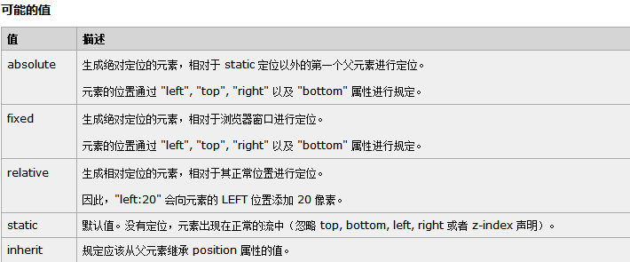
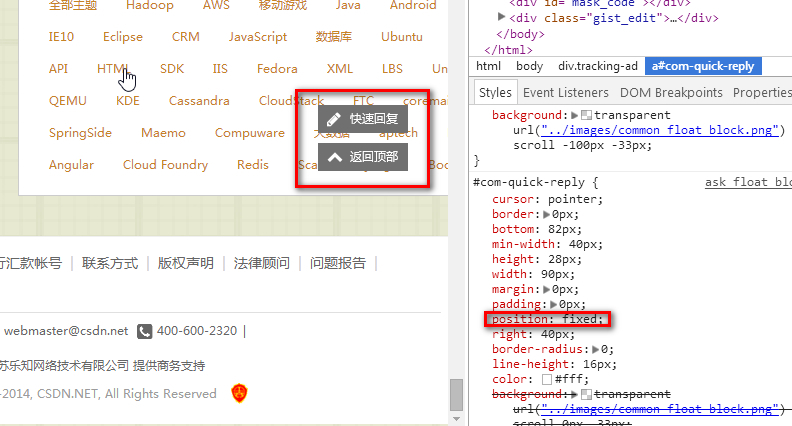
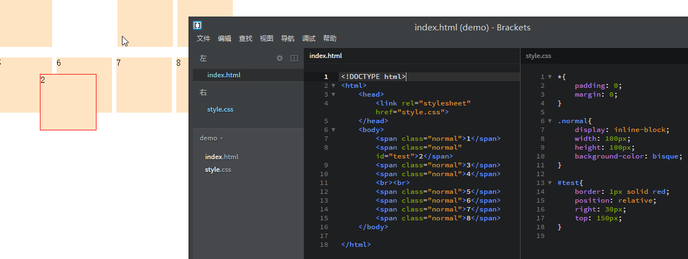
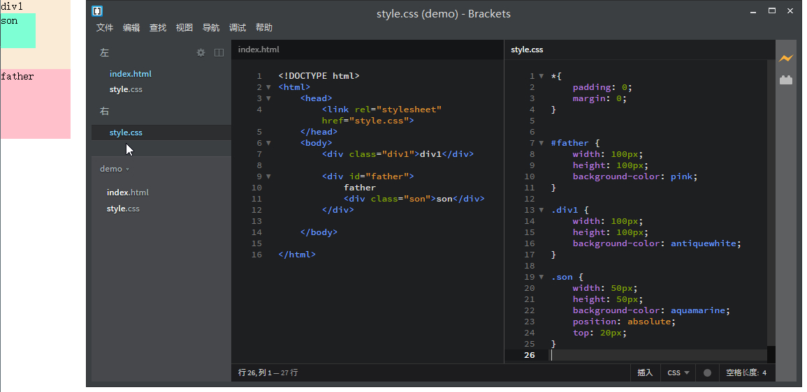
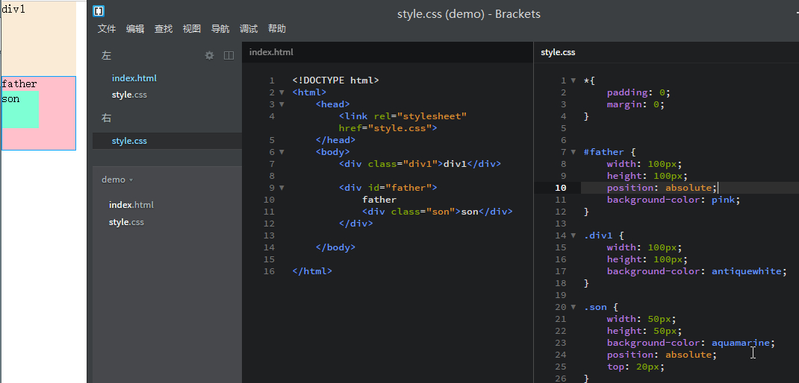

文档流介绍
将窗体自上而下分成一行行， 并在每行中按从左至右的顺序排放元素，即为文档流
每个非浮动块级元素都独占一行， 浮动元素则按规定浮在行的一端。 若当前行容不下， 则另起新行再浮动
内联元素也不会独占一行。 几乎所有元素(包括块级，内联和列表元素）均可生成子行， 用于摆放子元素
有三种情况将使得元素脱离文档流而存在，分别是 浮动（float）、绝对定位（position:absolute）、固定定位（position:fixed）
Position的取值

图片取自W3School，时间比较老，在最新的CSS3标准中又加入了sticky属性
static
无特殊定位，它是html元素默认的定位方式，即我们不设定元素的position属性时默认的position值就是static，它遵循正常的文档流对象，对象占用文档空间，该定位方式下top、right、bottom、left、z-index等属性是无效的。
fixed
它是相对浏览器进行定位，元素的位置通过left、top、right、bottom属性进行规定
当页面滚动时并不跟随页面，因此它必定是脱离文档流的
比如浏览器右下角的回到顶部按钮

relative
相对定位：相对自己文档流中的原始位置定位
原始元素（不设置relative时）的空间会被占据，元素的相对于原始元素的位置做出变化，同时不会影响其它周围元素的位置，因此相对定位之后，元素仍在文档流中

absolute
顾名思义：绝对定位
首先绝对定位会脱离正常文本流，但与relative的区别是其在正常流中的位置不再存在
-
如果没有TRBL(top、right、bottom、left)设置，则以父级的左上角做参照，在没有父级的时候，他是参照浏览器左上角,如果在没有父级元素的情况下，存在文本，则以它前面的最后一个文字的右上角为原点进行定位但是不断开文字，覆盖于上方
-
如果设定TRBL，并且父级没有设定position（relative，absolute，fixed）属性，那么当前的absolute则以浏览器左上角为原始点进行定位
-
如果设定TRBL，并且父级设定position属性，则以父级的左上角为原点进行定位。即使父级有Padding属性，对其也不起作用，说简单点就是：它只坚持一点，就以父级左上角为原点进行定位，父级的padding对其没有影响
例图：父元素没有设置position,则相对于窗口

例图：父元素设置position,则相对于父元素

inherit
严格意义来讲inherit并不算布局的一种，应为它只是position属性的可能取值，inherit关键字代表“使用指定给父元素的所有值”。如果父元素中没有明确的值定义，浏览器搜寻DOM树直到找到相应的属性。最终无法找到的话，它会使用浏览器的默认值
所以position:inherit的意思就是使用父元素的position的值，如果父元素没有设置，那么它的值就是默认的static,同理background-color:inherit，则它的背景色就和父元素的背景色一样
position:static position:inherit的区别是inherit继承,其值在运行过程中,可以改变 ，static静态的,在运行中,值始终保持不变
sticky
在一些很长的表格中，常常会使用表头悬浮的设计以方便阅读，即在表格离开窗口之前，表头会一直 fixed 悬浮在表格的最顶上。还有许多诸如评论框等元素，也采用了这种被称为 Sticky Pin 或者 粘性元素 的设计
position:sticky是一个新的css3属性，它的表现类似position:relative和position:fixed的合体，在目标区域在屏幕中可见时，它的行为就像position:relative; 而当页面滚动超出目标区域时，它的表现就像position:fixed，它会固定在目标位置
注意：因为这个样式尚未进入标准，还必须使用私有前缀